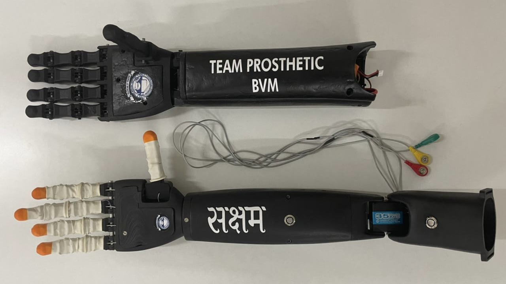

Smart Upper Prosthetic Limb.
An IoT-enabled smart prosthesis with fine finger articulation, tactile feedback, and learning that adapts to live muscle signals. Winner of GUJCOST ROBOFEST 2.0.

Birla Vishvakarma Mahavidyalaya
GUJCOST ROBOFEST 2.0 · ₹650K
IoT · C++ · Neural Net · PCB
The brief.
I led a team at Birla Vishvakarma Mahavidyalaya to build a smart prosthesis with remote sensors, tying together IoT, AI, and neural networks. I designed the hand, fabricated it, and made a custom PCB for it.
The aim was to give the user full control of the limb, cloud connectivity for storing and analyzing data, and a sense of touch that feels closer to a real hand. The prototype uses high-torque motors for stability, a design that is easy to live with, and learning that adapts to the user's muscle commands in real time.
Goal & objectives.
Goal: build a smart AI prosthesis with IoT that gives the user full control of their limb, connects to the cloud for storage and analysis, and feels like part of them, closing the loop between a person and a prosthetic hand.
- Show a hand that actuates four fingers and a thumb independently and can pick up at least two different objects, repeatably, with no off-the-shelf kits or chassis.
- Pick up and hold a 400 mL glass of water for one minute, hands-off, without spilling, to prove it can grip securely and handle a real task on its own.
The making.
01 · Mechanical Design & Fabrication
I built the CAD model in Autodesk Fusion 360, designing for durability, easy repair, and low weight. The fingers are human-like and the thumb is sturdy with extra degrees of freedom. I used ABS (Acrylonitrile Butadiene Styrene) for its strength-to-weight, which got me a 22% volume reduction from the first proof-of-concept. Parts were 3D printed and finished in the institute's central workshop.
02 · Electronics & Sensor Integration
I integrated an Arduino Nano RP2040 Connect, sEMG (Surface Electromyography) sensors, a 16-channel servo controller, high-torque servos, tactile sensors, and haptic motors. The sEMG electrodes are placed to pick up muscle activity and feed the signal to the Arduino. The RP2040 handles the computation, sensor reads, and motor commands; I chose it for its built-in Wi-Fi and Bluetooth.
03 · Software & Neural Network
I wrote a custom neural network in C++ to read the muscle signals and drive the fingers, training it on roughly 2,200 data points to tell an active arm position from a passive one. I also built a web app to test and control the hand, one finger at a time or in combination. It is IoT-enabled for data collection, performance monitoring, and over-the-air updates down the line.
Achievements.
Team BVM won the state-level robotics competition GUJCOST ROBOFEST 2.0, run by the Government of Gujarat, India. The prize was ₹650,000 INR, about $8,800 USD.
Build artifacts.


